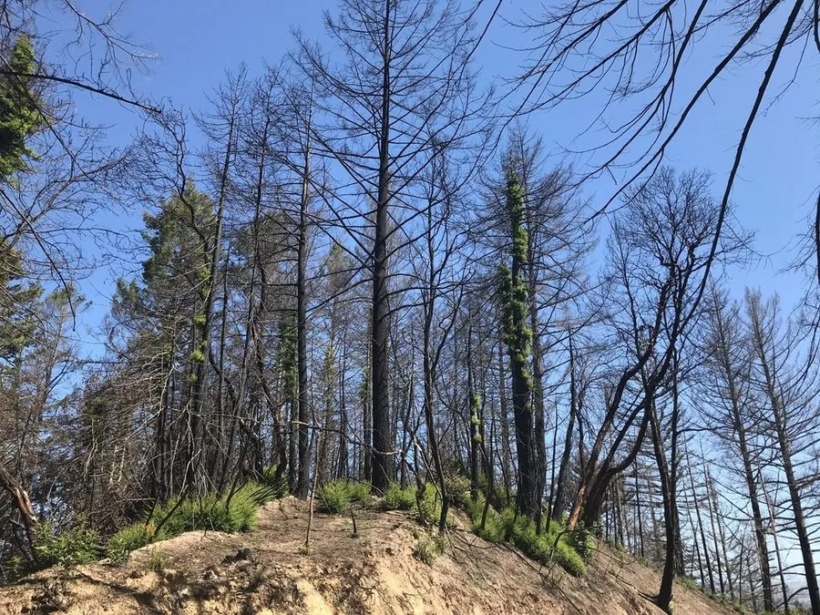

乔木 · 植物界
北美红杉 Sequoia sempervirens

北美洲太平洋沿岸的巨型针叶树，树高可超过 100 m，是世界上最高的树种之一，寿命可达两千年。
- 分类
- 门裸子植物门纲松柏纲目松柏目科柏科属红杉属
- 栖息环境
- 美国西部太平洋沿岸多雾的海岸山地，海拔 1000 m 以下，喜海洋性气候
- 地理分布
- 美国加利福尼亚州北部至俄勒冈州西南部的海岸狭长地带
- 保护级别
- IUCN 濒危（EN）；原生古树受美国法律保护，禁止采伐
物种志
北美红杉为常绿针叶大乔木，树高可达 110 m 以上，胸径可达 6 m，树干通直，树皮红褐色、厚可达 30 cm，具极强的耐火能力；树冠呈圆锥形，枝条平展。叶片条形、扁平，下面有两条白色气孔带，螺旋状排列于小枝上；雌雄同株，雄球花生于枝顶，球果卵形、长约 2 cm，成熟时红褐色，种子小、具翅，球果成熟后当年即散播种子。
北美红杉分布于美国加利福尼亚州北部至俄勒冈州西南部的狭窄海岸地带，海拔多在 1000 m 以下，依赖太平洋的海洋性雾气与充沛降水，常与花旗松、铁杉等混生。红杉根系浅但侧根发达，可相互交织增强抗风性；木材耐腐、易加工，是建筑、家具与枕木良材；树皮富含单宁，可提取鞣料。由于原始森林面积大幅减少，北美红杉已被列为濒危物种。
形态与习性
- 株高可达 110 m，最高记录 115.9 m
- 花期球花春季开放
- 球果成熟当年秋季，种子小、具翅
- 光照喜光，幼树可耐一定庇荫
- 水分依赖海雾与充沛降水
- 土壤深厚湿润的冲积土或坡积土
- 主要用途建筑用材、树皮提取鞣料、国家公园观赏
趣味知识
- 北美红杉最高记录达 115.9 m，是世界最高的活体树木之一。
- 红杉树皮厚达 30 cm，富含单宁，能抵抗林火，大火后仍可萌发新芽。
- 红杉的针叶能直接吸收海雾中的水分，让它在夏季少雨的沿海也能生长。
- 美国加州的红杉国家公园与州立公园保存着大片原始红杉林，树龄多超过千年。